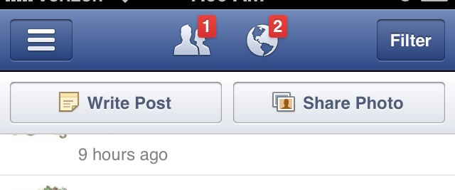

Table of Contents
Brain Stuff
Designed Distractions
Websites do this constantly. Split up web pages into separate pages so that they can force you to view more ads.
Time well spent
Another example is the notification count thing, ala: 
{kind=link}
- They tried it as blue before, but no one paid attention to it. When they made it red, people couldn't stop clicking on it! Fascinating…
Cal Newport
- Deep focus! Knowledge Workers are bad at working!
Will Gomez
(A smart co-worker at Edwards)
- Hang around smart people that know their stuff and don't mind telling you
- Seek to have hard focus.
- some other things….“Knowledge is Power” yep!
- The only thing certain is uncertainty.
- Cool guy, looking forward to talking more!
- Everything is an opportunity to learn. You never know when it comes in handy
- It's very important to know history, especially for your field of study. So you don't make the same mistakes again and you can see how really smart people came up with really elegant ideas (so you can try the same)
Learning
- Talk by Peter Norvig. Teach kids by walking them through failure! Instead of giving them the correct answer, have them struggle a bit to find the right formula, etc. They will be much better able to deal with uncertainty in the future.
- Dogs learn by rewarding positive and playing a lot! I argue we should do the same…
- The brain does a really good job with cochlear implants. Lots of signal theory too with it. Wired Article: http://www.wired.com/wired/archive/13.11/bolero.html
- Excellent tutorials on Physics topics. Physics at UNSW in Australia. Everything from mechanics to cochlear implants to acoustics, to differential equations, etc. All in illustrative movies

{kind=link}
- Lectures should be done in Gutenberg format. Hand out notes beforehand to study for class, and class is an interactive discussion between student and mentor/teacher…and not between rote copier and boring lecture.
- Intuitively/visually for me, such as BetterExplained (eBook?!)
- By doing hands-on projects and asking questions about things you don't know. Sal Khan thinks so too…
Personality
- Everyone's personality is different! And somehow…quite predictable.
- The Jung/Myers-Briggs Typology Test that started it all.
- Personality Plus, the book you found at Goodwill that only does 4 categories, but focuses more on the interactions between the categories.
Myers Briggs
Creativity
- Great talk by Elizabeth Gerber that you went to. Founder of Design for America.
- Core77 and DesignObserver blogs…
{kind=link}
Ronald Standler
- Lots of great essays that I'd like to read… right now! http://www.rbs0.com/
Creativity in Engineering
- Excellent Essay on Creativity in Engineering (very necessary!). Identifies me perfectly…
- Highlights:
> Students need to see more homework problems in school that require creative solutions:
- Instead of asking for one solution, require the A students to give two different methods of solving one problem. Encourage students to find creative solutions instead of prosaic solutions.
- Give problems that are unreasonably difficult to answer correctly, and have the students find a rough approximation.
- Give students problems without adequate information; let them go to the library and find the information that they need.
- Give more problems that ask the student to design a circuit, interpret data, design a method of doing an experiment, ….
- Assign term papers that require reading from multiple sources, making a creative synthesis of the information, and finding contradictions or inconsistencies in authoritative, published works.
- Occasionally assign exercises that show an incorrect solution to a problem (e.g., computer program that contains at least one bug, electronic circuit that will not function properly) and have the students find the defect and suggest a correction.
- Assign laboratory experiments that allow students freedom to choose technique(s) and topics.
- Arrange or compose music, not merely playing music. Occasionally assign exercises that show an incorrect solution to a problem (e.g., computer program that contains at least one bug, electronic circuit that will not function properly) and have the students find the defect and suggest a correction.
- Assign laboratory experiments that allow students freedom to choose technique(s) and topics.
- Arrange or compose music, not merely playing music.
- Creativity To-Do great ideas, great looking website too
- Visual Brainstorming don't talk at all and you might get around social awkwardness. Interesting idea, and more articles there.
Focus
- Hard Focus is hard work, and getting times of good focus is like training for a marathon! Cal Newport Blog Post
Sleep Schedule
Put eye covers, cover windows, white noise/Atmosphonic, do 4-7-8. http://www.wikihow.com/Fall-Asleep
- You simply breathe in through your nose for four seconds, hold your breath for seven seconds, and exhale through your mouth for eight seconds.
- Or 6-3-6-3 for 4 times.
- Or…just breathe deeply.
Steve Pavlina recommends going to bed when you feel sleepy, and getting up at the same time. Also, “programming” your body's subconcious to get up at 6am or whatever without listening to your concious self (practice doing it during nap times). He exercises for 25 minutes, takes a shower, and is ready for the day.
- Mack recommends this too
Feeling Drowsy after studying / little sleep
I personally think it is very normal/good to get a siesta / inemuri / Power-nap. So does NASA! They also studied caffeine naps too. It'd be interesting to read the studies.
Some people even fake inemuri, so that their bosses believe they are working hard. –Wikipedia
Where
Wherever no one can see you! It seems like in a car is the best spot, especially when it can rain outside. I've had success with underneath a corner desk at work or on the roofs of parking lots / buildings. I don't really feel safe napping in an open park not near a corner.
- After food and getting bored with doing the same thing.
- Solutions! (from Cal Newport Win At College
- Don't do the same thing! Read a book, make a list of things to do, anything to get your mind doing something different.
- Don't nap!
- Caffeine? Probably lose focus, go au naturale